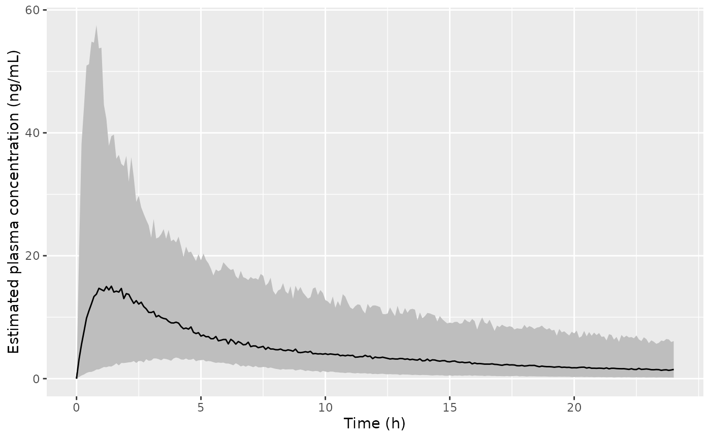
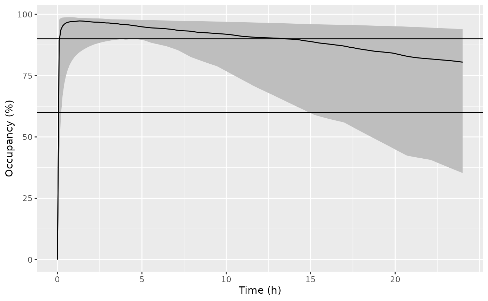

library(nlmixr2lib)
library(PKNCA)
#>
#> Attaching package: 'PKNCA'
#> The following object is masked from 'package:stats':
#>
#> filter
library(dplyr)
#>
#> Attaching package: 'dplyr'
#> The following objects are masked from 'package:stats':
#>
#> filter, lag
#> The following objects are masked from 'package:base':
#>
#> intersect, setdiff, setequal, union
library(ggplot2)Model and source
- Citation: Kyhl LE, Li S, Faerch KU, Soegaard B, Larsen F, Areberg J. Population pharmacokinetics of nalmefene in healthy subjects and its relation to μ-opioid receptor occupancy. Br J Clin Pharmacol. 2016 Feb;81(2):290-300. doi: 10.1111/bcp.12805. Epub 2016 Jan 27. PMID: 26483076; PMCID: PMC4833148.
- Description: Population PK model for nalmefene in healthy volunteers (Kyhl 2016): two-compartment model with first-order absorption after oral dosing, separate absorption rates for tablet and solution formulations, and a link to mu-opioid receptor occupancy.
- Article: https://doi.org/10.1111/bcp.12805
Nalmefene replication
Replicate figures 5 in the publication with a single 20 mg dose in
the fed state. Assumed the mean age, lean body mass, a tablet, and the
LC-MS/MS assay was used. The paper indicates that simulations used a
uniform age distribution of 18-80 years and LBM of
~N(56,72). Since no limits were provided for LBM in the
simulation settings, these simulation settings were not used.
dSimDose <-
data.frame(
ID = 1,
AMT = 20, # dose in mg/kg # nolint: commented_code_linter.
TIME = 0,
EVID = 1,
CMT = "depot"
)
dSimObs <-
data.frame(
ID = 1,
AMT = 0,
WT = 5,
TIME = seq(0, 24, by = 0.1),
EVID = 0,
CMT = "central"
)
dSimPrep <-
dplyr::bind_rows(dSimDose, dSimObs) |>
dplyr::mutate(
LBM = 56.28,
AGE = 28,
RIA_ASSAY = 0,
FED = 1,
TABLET = 1
)
Kyhl2016Nalmefene <- readModelDb("Kyhl_2016_nalmefene")
conc_unit <- rxode2::rxode(Kyhl2016Nalmefene)$units[["concentration"]]
# Set BSV to zero for simulation to get a reproducible result
dSimNalmefene <- rxode2::rxSolve(Kyhl2016Nalmefene, events = dSimPrep, nStud = 500)
dSimNalmefene$Analyte <- "Nalmefene"Plot plasma PK
Replicate figure 5 from the paper. Assuming that the “confidence bounds” are actually 95% prediction intervals.
dSimNalmefenePlot <-
dSimNalmefene |>
group_by(time) |>
summarize(
Q025_pk = quantile(sim, probs = 0.025),
Q50_pk = quantile(sim, probs = 0.5),
Q975_pk = quantile(sim, probs = 0.975),
Q025_occ = quantile(e_mu_opioid, probs = 0.025),
Q50_occ = quantile(e_mu_opioid, probs = 0.5),
Q975_occ = quantile(e_mu_opioid, probs = 0.975)
)
ggplot(dSimNalmefenePlot, aes(x = time, y = Q50_pk, ymin = Q025_pk, ymax = Q975_pk)) +
geom_line() +
labs(
x = "Time (h)",
y = paste0("Estimated plasma concentration (", conc_unit, ")")
) +
geom_ribbon(fill = "gray") +
geom_line() +
scale_x_continuous(breaks = seq(0, 24, by = 5))
ggplot(dSimNalmefenePlot, aes(x = time, y = Q50_occ, ymin = Q025_occ, ymax = Q975_occ)) +
geom_line() +
labs(
x = "Time (h)",
y = "Occupancy (%)"
) +
geom_ribbon(fill = "gray") +
geom_line() +
geom_hline(yintercept = c(60, 90)) +
scale_x_continuous(breaks = seq(0, 24, by = 5))
NCA analysis
Non-compartmental analysis of simulated nalmefene plasma PK (single 20 mg oral tablet in the fed state, 500 virtual subjects via IIV sampling).
# Each replicate (sim.id) is treated as an independent subject
sim_nca <- dSimNalmefene |>
as.data.frame() |>
mutate(treatment = "20 mg PO (fed, tablet)")
dose_nca <- sim_nca |>
group_by(sim.id) |>
slice(1) |>
ungroup() |>
mutate(time = 0, AMT = 20) |>
select(sim.id, treatment, time, AMT)
conc_obj <- PKNCAconc(sim_nca, Cc ~ time | treatment + sim.id)
dose_obj <- PKNCAdose(dose_nca, AMT ~ time | treatment + sim.id)
data_obj <- PKNCAdata(conc_obj, dose_obj,
intervals = data.frame(start = 0, end = 24,
cmax = TRUE, tmax = TRUE,
auclast = TRUE, half.life = TRUE))
nca_results <- pk.nca(data_obj)
#> ■■■ 5% | ETA: 1m
#> ■■■■ 9% | ETA: 1m
#> ■■■■■ 13% | ETA: 1m
#> ■■■■■■ 17% | ETA: 1m
#> ■■■■■■■ 21% | ETA: 1m
#> ■■■■■■■■ 25% | ETA: 1m
#> ■■■■■■■■■■ 29% | ETA: 1m
#> ■■■■■■■■■■■ 33% | ETA: 1m
#> ■■■■■■■■■■■■ 36% | ETA: 49s
#> ■■■■■■■■■■■■■ 40% | ETA: 46s
#> ■■■■■■■■■■■■■■ 44% | ETA: 43s
#> ■■■■■■■■■■■■■■■ 48% | ETA: 40s
#> ■■■■■■■■■■■■■■■■■ 52% | ETA: 37s
#> ■■■■■■■■■■■■■■■■■■ 56% | ETA: 34s
#> ■■■■■■■■■■■■■■■■■■■ 60% | ETA: 31s
#> ■■■■■■■■■■■■■■■■■■■■ 64% | ETA: 28s
#> ■■■■■■■■■■■■■■■■■■■■■ 68% | ETA: 25s
#> ■■■■■■■■■■■■■■■■■■■■■■ 72% | ETA: 22s
#> ■■■■■■■■■■■■■■■■■■■■■■■■ 75% | ETA: 19s
#> ■■■■■■■■■■■■■■■■■■■■■■■■■ 79% | ETA: 16s
#> ■■■■■■■■■■■■■■■■■■■■■■■■■■ 83% | ETA: 13s
#> ■■■■■■■■■■■■■■■■■■■■■■■■■■■ 87% | ETA: 10s
#> ■■■■■■■■■■■■■■■■■■■■■■■■■■■■ 91% | ETA: 7s
#> ■■■■■■■■■■■■■■■■■■■■■■■■■■■■■ 95% | ETA: 4s
#> ■■■■■■■■■■■■■■■■■■■■■■■■■■■■■■■ 99% | ETA: 1s
nca_summary <- summary(nca_results)
knitr::kable(nca_summary, digits = 2,
caption = "NCA summary (single 20 mg oral tablet, fed state)")| start | end | treatment | N | auclast | cmax | tmax | half.life |
|---|---|---|---|---|---|---|---|
| 0 | 24 | 20 mg PO (fed, tablet) | 500 | 122 [60.9] | 14.1 [82.6] | 1.60 [0.200, 11.1] | 15.5 [11.6] |